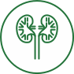

Урология
-
Тренинг интимных мышц Emsella

-
Аппаратная методика, предназначенная для проведения неинвазивной электромагнитной стимуляции мышц
тазового дна с целью реабилитации слабых мышц таза и восстановления нервно-мышечного контроля. Подходит
и для женщин, и для мужчин.
-
Аппаратное лечение
- «Яровит» – вакуумный физиотерапевтический массажер, предназначенный
для улучшения трофики сосудистого аппарата наружных половых органов и предстательной железы.
«Андро-Гин» – прибор, предназначенный для физиотерапевтического лечения заболеваний мочеполовой системы.
Благодаря лазерному, магнитному, нейростимулирующему и цветоритмичному излучению, «Андро-Гин» помогает
успешно справиться с хроническими заболеваниями.
-
Лимфотропное введение лекарств в паховые лимфоузлы
- Метод лечения, предполагающий введение лекарственных средств
непосредственно в лимфатическую систему – зону максимального скопления лимфатических сосудов и узлов.
Отличается высокой эффективностью, которая обусловлена наличием связей между органами/тканями и
лимфатической системой. Это обеспечивает адресную доставку лекарственного средства непосредственно к
больному органу.
-
Спектральная фототерапия (СФТ) на проекцию органов
-
Данный метод доставки необходимых микроэлементов к пораженному органу с помощью мультиспектральной
энергии света сочетает принципы фототерапии и рефлексотерапии. Лечебный эффект достигается за счет
насыщения организма определенными микро- и макроэлементами, которые участвуют во всех обменных
процессах, обеспечивая нормальное функционирование организма.
-
Консультация врача-уролога
- Врач-уролог – специалист, проводящий диагностику, профилактику и
лечение органов мочевой (у мужчин и женщин) и половой (только у мужчин) систем.
-
Урологический check-up
-
Диагностика заболеваний мочеполовой системы у мужчин. Рекомендовано при наличии жалоб со стороны органов
малого таза, при отягощенной наследственности по урологическим заболеваниям – простатит, ДГПЖ
(доброкачественная гиперплазия предстательной железы), опухолевые заболевания, бесплодие, другие
урологические заболевания, возраст 40 лет и старше.
-
УЗИ органов малого таза
-
Ультразвуковое обследование внутренних органов через переднюю брюшную стенку. Процедура проводится с
наполненным мочевым пузырем и позволяет определить размеры половых органов, их структуру и наличие
крупных патологических образований (опухоли, кисты).
-
ТРУЗИ простаты
- Трансректальное ультразвуковое исследование предстательной железы
проводится для определения степени поражения простаты, описания ее внешних характеристик и поиска
измененных внутренних тканей.
-
Фиброцистоскопия
-
Эндоскопический метод исследования состояния внутренней стенки мочевого пузыря с помощью оптического
прибора — фиброцитоскопа.
-
Спермограмма
-
Лабораторное исследование спермы (эякулята), которое проводят для определения состояния сперматогенеза,
особенностей функционирования придаточных половых желез, участвующих в образовании эякулята (простата,
семенные пузырьки), с целью оценки состояния фертильности и выявления урологической патологии.